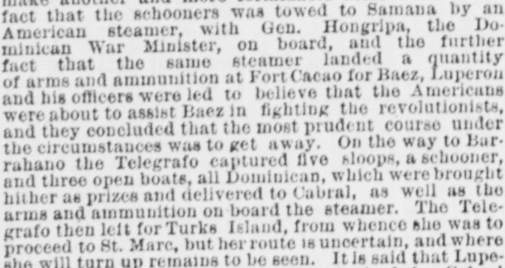
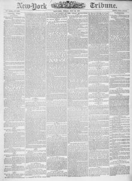

Minican War Minister, on board, and the further fact that theMinistro de Guerra dominicano, a bordo, y el hecho ulterior de que el
New-York Tribune. New York [N.Y.], July 23, 1869. Page 1. View the originalVer el original


See the full pageVer la página completaThe New-York Tribune reported that revolutionists led by Luperón retreated from Samana after believing Americans were assisting Báez, subsequently capturing several Dominican vessels and delivering them along with arms and ammunition to Cabral. While at Samana, Luperón organized a provisional government and issued a circular declaring that the revolutionists controlled Samana Bay and would treat any treaties or contracts regarding its sale or cession as null and void.El New-York Tribune refirió que los revolucionarios acaudillados por Luperón se retiraron de Samaná creyendo que los estadounidenses auxiliaban a Báez, tras lo cual apresaron varios bajeles dominicanos y los pusieron junto con armas y municiones a disposición de Cabral. Durante su permanencia en Samaná, Luperón instauró un gobierno provisorio y circuló una proclama sosteniendo que las fuerzas de la revolución señoreaban la bahía de Samaná y declararían írrito y nulo cualquier pacto, cesión o enajenación de su territorio.
FULL TEXT:TEXTO COMPLETO:
MOVEMENTS OF THE STEAMER TELEGRAFO—THE REVOLUTIONISTS AND THE SAMANA QUESTION—STEAM COMMUNICATION WITH NEW-YORK.MOVIMIENTOS DEL VAPOR TELEGRAFO—LOS REVOLUCIONARIOS Y LA CUESTIÓN DE SAMANÁ—COMUNICACIÓN POR VAPOR CON NUEVA YORK.
BARRAHANO, July 9.—Shortly after the fight in the Bay of Samana, between the steamer Telegrafo and the two armed schooners, which were towed down thither from Santo Domingo City by the New-York steamer Tybee, Gen. Luperon left Samana in the Telegraph for this place. The schooners were both disabled in the fight, but Luperon did not venture to follow them when they withdrew. It is said that his sudden departure from Samana was owing to the fear that Baez might make another and more formidable attack. From the fact that the schooners was towed to Samana by an American steamer, with Gen. Hongripa, the Dominican War Minister, on board, and the further fact that the same steamer landed a quantity of arms and ammunition at Fort Cacao for Baez, Luperon and his officers were led to believe that the Americans were about to assist Baez in fighting the revolutionists, and they concluded that the most prudent course under the circumstances was to get away. On the way to Barrahano the Telegrafo captured five sloops, a schooner, and three open boats, all Dominican, which were brought hither as prizes and delivered to Cabral, as well as the arms and ammunition on board the steamer. The Telegrafo then left for Turks Island, from whence she was to proceed to St. Marc, but her route is uncertain, and where she will turn up remains to be seen. It is said that Luperon's presence here just now was not desired by Cabral and the other leaders of the revolution.BARRAHANO, 9 de julio.—Poco después de la lucha en la Bahía de Samaná, entre el vapor Telegrafo y las dos goletas armadas, que fueron remolcadas hasta allí desde la ciudad de Santo Domingo por el vapor neoyorquino Tybee, el general Luperón salió de Samaná en el Telegraph hacia este lugar. Ambas goletas quedaron averiadas en la lucha, pero Luperón no se atrevió a seguirlas cuando se retiraron. Se dice que su súbita partida de Samaná se debió al temor de que Báez pudiera hacer otro ataque más formidable. Por el hecho de que las goletas fueron remolcadas a Samaná por un vapor estadounidense, con el general Hongripa, el Ministro de Guerra dominicano, a bordo, y el hecho además de que el mismo vapor desembarcó una cantidad de armas y municiones en el Fuerte Cacao para Báez, Luperón y sus oficiales fueron llevados a creer que los estadounidenses estaban a punto de ayudar a Báez a combatir a los revolucionarios, y concluyeron que el curso más prudente en las circunstancias era marcharse. En el camino hacia Barrahaño, el Telegrafo capturó cinco balandras, una goleta y tres botes abiertos, todos dominicanos, que fueron traídos aquí como presas y entregados a Cabral, así como las armas y municiones a bordo del vapor. El Telegrafo partió entonces hacia la isla Turks, desde donde había de dirigirse a St. Marc, pero su ruta es incierta, y dónde aparecerá está por verse. Se dice que la presencia de Luperón aquí ahora mismo no era deseada por Cabral ni por los demás jefes de la revolución.
While he was at Samana Luperon organized a provisional Government, and addressed a circular dispatch to the agents in foreign countries of the revolutionary party, apprizing them of the fact. In the circular he instructs them to take pains to let it be distinctly understood abroad that the revolutionists have possession of the important Bay of Samana, henceforth separated from the power and control of Baez, and that consequently all treaties and contracts which may have been made, or may hereafter be made, relative to the cession or the sale of said Bay, will be regarded and treated as null and void and of no effect, the Dominican people protesting, as they will ever protest, against any act violating the integrity of the national territory.Mientras estaba en Samaná, Luperón organizó un Gobierno provisional, y dirigió un despacho circular a los agentes en países extranjeros del partido revolucionario, informándoles del hecho. En la circular les instruye a que se esmeren en hacer entender distintamente en el extranjero que los revolucionarios tienen posesión de la importante Bahía de Samaná, separada en adelante del poder y control de Báez, y que en consecuencia todos los tratados y contratos que se hayan hecho, o que en lo sucesivo se hagan, relativos a la cesión o la venta de dicha Bahía, serán considerados y tratados como nulos y sin valor ni efecto alguno, protestando el pueblo dominicano, como protestará siempre, contra cualquier acto que viole la integridad del territorio nacional.
The Samana question is producing a crop of trouble for President Baez, who, it is said, considers that the precipitate action of Col. Fabens at Washington, relative to annexation, has done the Dominican Government more harm than good. The revolutionists are gaining ground.La cuestión de Samaná está produciendo una cosecha de problemas para el presidente Báez, quien, se dice, considera que la precipitada acción del coronel Fabens en Washington, relativa a la anexión, ha hecho al Gobierno dominicano más daño que bien. Los revolucionarios están ganando terreno.
Baez is very anxious to have regular steam communication between New-York and Santo Domingo, and has himself written to a New-York mercantile firm, offering every facility and encouragement for the establishment of a line of steamers between the two places.Báez está muy ansioso por tener comunicación regular por vapor entre Nueva York y Santo Domingo, y él mismo ha escrito a una firma mercantil de Nueva York, ofreciendo toda facilidad y estímulo para el establecimiento de una línea de vapores entre los dos lugares.